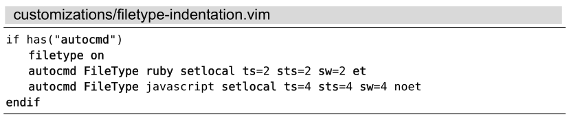

）。在本例中，我们将监听FileType事件，它会在Vim检测出当前文件类型时被触发。
）。在本例中，我们将监听FileType事件，它会在Vim检测出当前文件类型时被触发。A.3为特定类型的文件应用个性化设置
我们的偏好设置有可能根据文件的类型不同而有所差异。举个例子，假设排版格式要求，对 Ruby文件要采用两个空格的缩进，而对JavaScript文件采用4列宽度的制表符。为此，我们可以将以下文本行添加至vimrc，应用这些设置：

autocmd语句的检测机制将指示Vim监听某一类事件，一旦该事件发生，Vim将执行指定的命令（参见:h :autocmd）。在本例中，我们将监听FileType事件，它会在Vim检测出当前文件类型时被触发。
我们可以为相同类型的事件添加不止一条自动命令。假设我们想采用nodelint来检查JavaScript类型的文件，就可以将以下文本添加到上例中：
每当JavaScript类型文件中的FileType事件被触发时，这两条自动命令都会被执行。
如果你只是为特定类型的文件定制一至两处选项的话，那么，将这些自动命令置于vimrc中就可以工作得很好了。但如果我们想在某一类文件中应用很多项设置，这样做将使得vimrc变得很乱。另一种方法是使用文件类型插件（ftplugin），来为不同文件类型进行定制。这一次，我们不是在vimrc添加自动命令来设置JavaScipt文件类型的偏好，而是将它们移到路径为~/.vim/after/ftplugin/javascript.vim的文件中去：
该文件就像普通的vimrc文件，但这些设置项只会在JavaScript类型的文件中才会应用。我们也可以针对Ruby的定制选项创建ftplugin/ruby.vim文件，或者对我们常用的其他类型文件进行定制。更多细节请查阅:h ftplugin-name。
为了能够使用ftplugin机制，我们必须确保检测文件类型的功能以及插件功能都被激活了。请检查一下vimrc，看看是否包含了这行文本：

(1) http://vimcasts.org/e/2